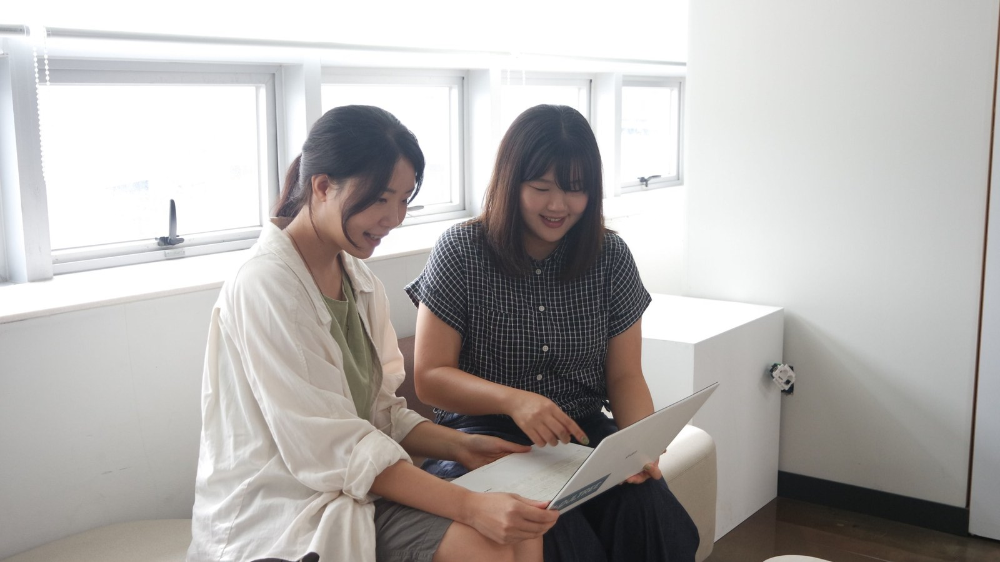
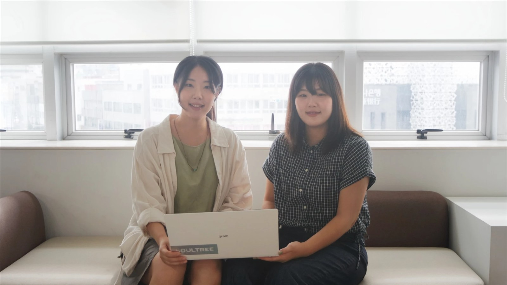

As the plane's wheels touched the runway in Jeju, I was thinking back on my everyday life in Seoul. The days of commuting, trapped in the subway. For me, having graduated from Byeolmuri School in Geumsan, South Chungcheong Province, and then worked in Seoul, heading to Jeju was not simply a trip.
“Let's start over in Jeju with the education this era needs.”
— My former teacher's suggestion
At my former teacher's suggestion, I packed my bags without hesitation. I wanted to create a place of learning where children discover life's problems firsthand and solve them on their own.
Thirty-four like-minded families came together to secure a site in Hamdeok in Jocheon-eup. Here, we are preparing to found the school, aiming to open in 2027.
Moving from one one-month-stay room to the next
Along with preparing the school, I had to make a place for my own life in Jeju. It was the early days of the founding, so money was tight. Housing was more expensive than I had expected, and “yeonse,” paying a full year's rent in one lump sum, was a particular burden.
With no lump sum to spare, I dragged my suitcase from one short-term “one-month stay” rental to another. The real estate apps I had used on the mainland turned up nothing suitable. Only after leafing through the local listings paper “Oiljang Sinmun” and searching on foot did I find a place to stay.

Sometimes I suddenly miss the stimulation and the new spaces the city offered. When I buy something for 10,000 won online and have to pay an extra 5,000 to 6,000 won for shipping, I still can't help letting out a hollow laugh.
Settling in Jeju also meant finding a home, covering living costs, and distancing myself from the conveniences I was used to.
The power of relationships I learned while preparing the school
Founding the school brought plenty of unfamiliar tasks, too. Submitting documents to government offices and looking into sites did not move as quickly as I had hoped, and it was frustrating.
Over time, I came to realize how important it is to build trust with the people preparing the school alongside me.
I went in person to local architects and designers in Jeju and told them about the school we wanted to create. I reached out first, inviting elders from the community to serve as directors of the school's cooperative. As we got to know one another and shared the school's vision, the preparations gradually began to fall into place.
Meeting the people I would live alongside here and building relationships with them mattered just as much as the will to found a school. Through that process, I, too, was settling into Jeju.
Learning that makes the whole island a classroom
The classes I am preparing go beyond the boundaries of the blackboard and the square classroom. I divide the year into four seasons and build the learning process around two modules: “Dive,” for in-depth exploration, and “Wave,” for going out into the field. I want to learn with the children, using the land of Jeju as our textbook.
I am planning classes in which we examine the volcanic island's terrain firsthand at Sangumburi Crater and visit St. Isidore Ranch and Geumneung Beach to learn. I am also preparing a bicycle trip around Jeju. I hope that journey becomes an experience through which the children learn about community.

I want to be a teacher who prepares a wide range of experiences so that children can go out into the world, and who supports their growth from close by. I want to be a helper who stays with the children as they discover problems and try to solve them on their own.
Alongside the people I will share my life with
To people thinking about moving to Jeju, I say: find a community, and reach out to the local people first. For me, too, the people preparing the school with me and the relationships I formed in the area gave me the strength to settle in Jeju.
Even in moments when daily life feels inconvenient, I open the window and come face to face with Jeju's nature.
When I think of the tomorrow I will cultivate here with the children, I am reminded of why I came to Jeju.
I used to commute by subway in Seoul; now, in Jocheon, I am preparing a place of learning to share with children. Sharing the vision of the school we want to create, I am waiting for the day we will learn there together.
 I came to Jeju to build a school together | The Jeju life of Ain School's Ahn Se-eun (in Korean) · Watch on YouTube
I came to Jeju to build a school together | The Jeju life of Ain School's Ahn Se-eun (in Korean) · Watch on YouTube
The island classroom Ahn envisions
From Sangumburi Crater to St. Isidore Ranch and Geumneung Beach. Swipe sideways through the photos inside the island.

01. Sangumburi Crater
Jeju's nature, unfolding with the wind
One of Jeju's signature natural landmarks, where vast fields of silver grass meet a mysterious crater. Amid scenery that changes with every season, it is a place where you can fully feel Jeju's stillness and beauty.
Photo: 한국관광공사-이범수 (Korea Tourism Organization)
- Published
- Interviewer
- 유수진
- @e_jeju.min